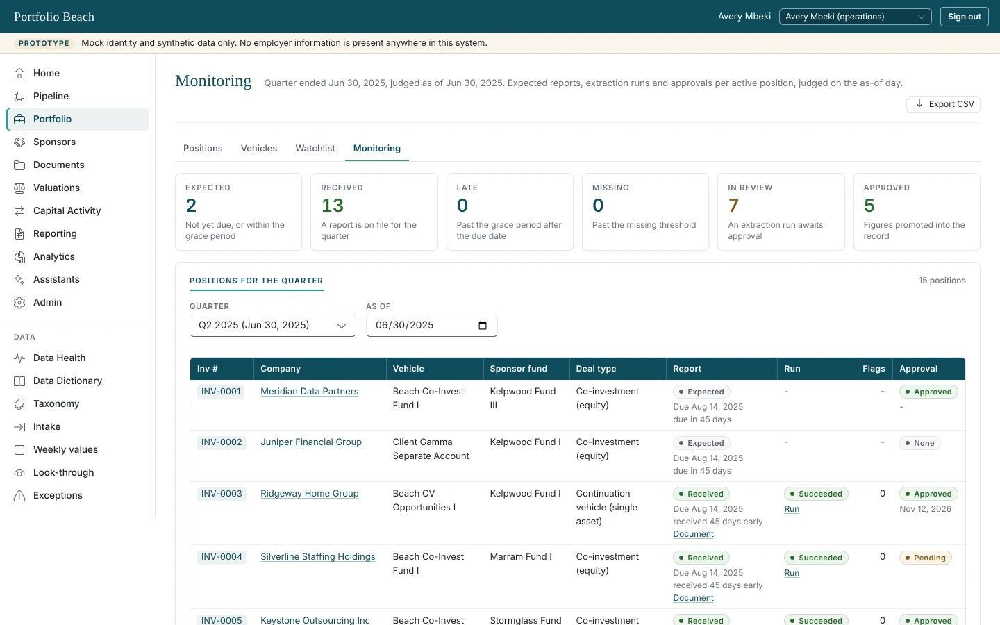
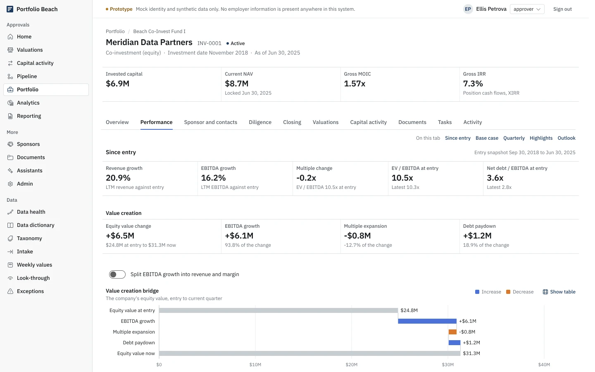
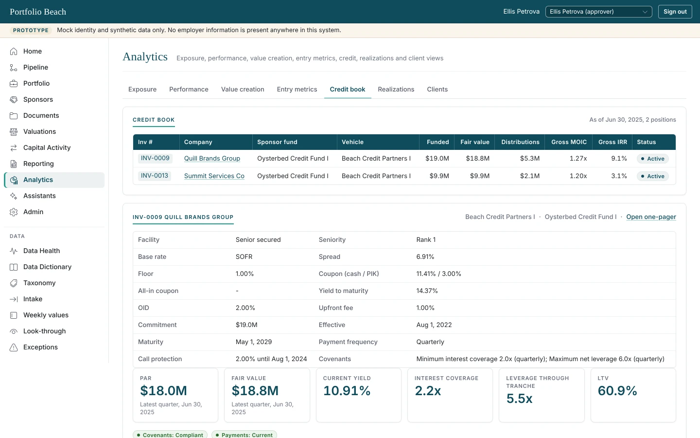
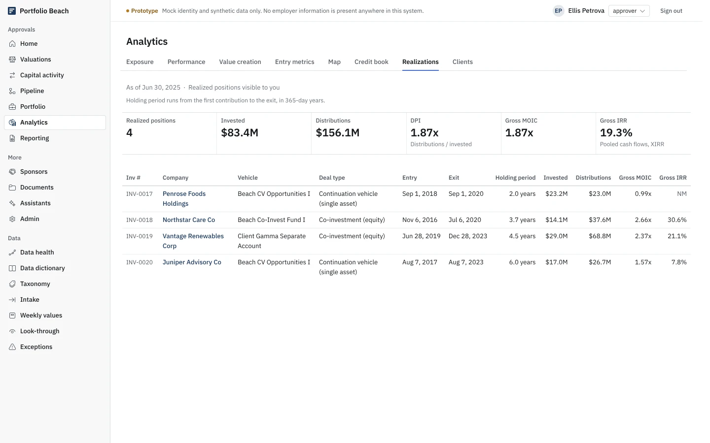
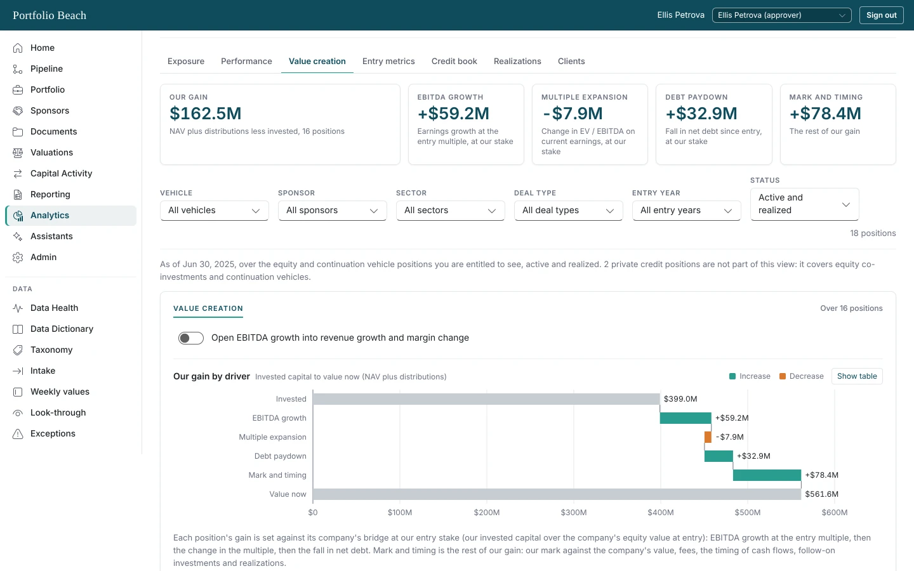
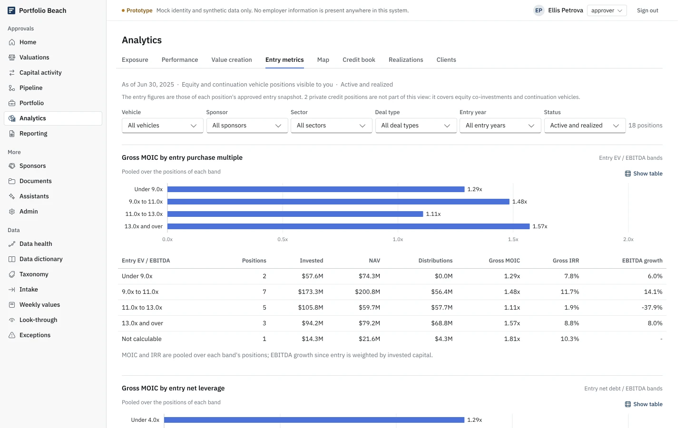
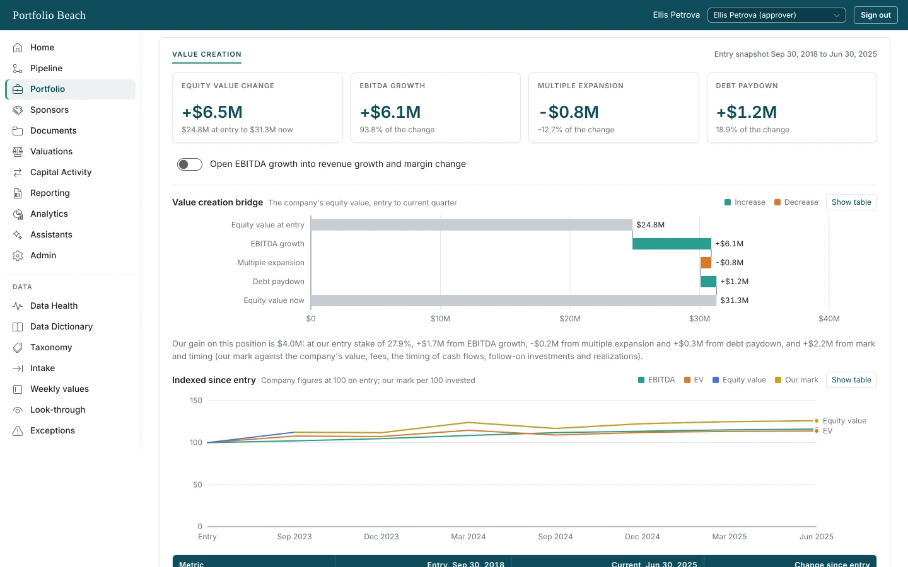

How approved figures move from a sponsor report to the board, the deal and the charts.
Prototype, synthetic data only
The monitoring board
The board answers one question for the quarter: for each active position, is the sponsor
report in, read and approved?
Report status: expected, received, late or missing, judged against its due date.
The state of the extraction run and the number of flagged values.
Whether the figures are approved into the record, and when.
An export of every row to CSV.

The monitoring board for the latest quarter.

A deal’s Performance tab: the quarterly series, with the source of an approved quarter.
Each deal, quarter by quarter
Revenue, EBITDA, margin, enterprise value, net debt and leverage by quarter.
Prior year means the same fiscal quarter one year earlier. When it is not on record,
the cell shows a placeholder, never a nearby period.
A quarter approved from an extraction run links back to the document and the page its
figures came from.
Since entry: revenue growth, EBITDA growth and the change in multiple, from the entry
snapshot.
The watchlist
Positions are flagged against thresholds held in configuration, such as an EBITDA
decline, leverage above a limit or a stale valuation. Credit positions carry flags for
covenants and maturity.
Calculations
MOIC, IRR, TVPI, DPI and RVPI, margins, leverage and the credit ratios come from one
calculation library, tested against worked examples and cross-checked by a second
implementation.
Prototype. Synthetic data only: no real firm, fund, company or person appears.1 / 3
Portfolio BeachAnalytics and monitoring
Analytics over approved records
Seven tabs over the same record. Figures cover only the positions the signed-in user may
see, NAV reads Locked valuations only, and every chart has a table behind it. Value
creation and entry metrics are on the next page.
Exposure
NAV and invested capital by sector, geography, deal type, vehicle, sponsor or vintage,
with each bucket’s share of NAV.
Performance
Pooled invested capital, distributions and NAV with DPI, RVPI, TVPI, gross MOIC and
gross IRR, the NAV trend by quarter and cash flows by year.

Credit book
Each credit position with its terms: facility, base rate, floor and spread, the cash and
PIK coupon, maturity and covenants, beside par, fair value, current yield, interest
coverage, leverage through the tranche and LTV.

Realizations and clients
Realized positions with their holding period, distributions and returns, and each
entitled client’s look-through share of every vehicle, by ownership.
Planned
Benchmarking
Public market equivalents and quartiles against synthetic benchmark series.
Planned
Forecasting and exits
Liquidity forecasting with tunable parameters, and exit analytics.
Reporting packages for clients are planned, not built. The prototype has an on-screen weekly
report and the client look-through only.
Prototype. Synthetic data only: no real firm, fund, company or person appears.2 / 3
Portfolio BeachAnalytics and monitoring
Value creation: the gain by driver
Two tabs of analytics cover the equity co-investments and continuation vehicles, active
and realized. They answer where the gain came from and how the terms at entry played out.

The Value creation tab: the gain by driver, as tiles and as a bridge.
The gain on a position is NAV plus distributions less invested capital.
The company’s equity value change since entry is split in a fixed order: EBITDA growth
at the entry multiple, then the change in the multiple, then the fall in net debt.
Each driver is taken at the entry stake: invested capital over the company’s equity
value at entry. The rest of the gain is shown as mark and timing.
A switch opens EBITDA growth into revenue growth and margin change.

Entry metrics
Pooled gross MOIC and gross IRR, and EBITDA growth weighted by invested capital, by
entry purchase multiple band and by entry net leverage band. The bands are held in
configuration. A chart plots each company’s entry multiple against its MOIC.

On each deal
The Performance tab of an equity or continuation vehicle position carries the company’s
own bridge with each driver’s share, the gain on the position at the entry stake, and
EBITDA, enterprise value, equity value and the mark indexed since entry.
Valuation against earnings
Each company’s valuation growth against its EBITDA growth since entry, on the mark, the
company equity value or the enterprise value, with a line where the two are equal.
One row of filters
Vehicle, sponsor, sector, deal type, entry year and status narrow both tabs. Every
figure is rolled up again over the positions that pass. The table exports to CSV.
Nothing dropped silently
A position that cannot be split is counted and listed with its reason, such as EBITDA at
or below zero. Private credit positions are outside these two tabs.
Prototype. Synthetic data only: no real firm, fund, company or person appears.3 / 3